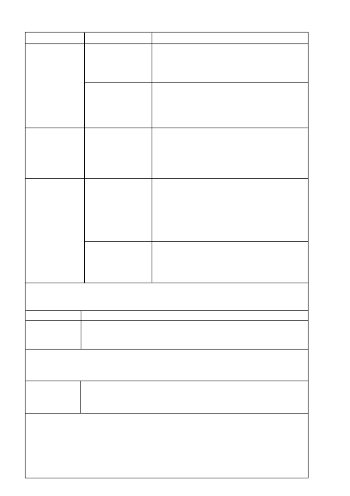

SCORE
®
/ 4
GEWAS/SIEKTE
GRONDBONE
(Vervolg)
MIELIES EN
SUIKERMIELIES
Grysblaarvlek
(C. zeae-maydis)
Noordelike blaarskroei
(H. turcicum)
SITRUS
Nawels,
Clementine, en
Mandaryn:
Nawel-endverrotting/
Swartkernverrotting
(A. citri)
en
Mandaryn:
Bruinvlek
(A. alternata)
DOSIS
Besproeiing
300 m
l
/ha elke
10 - 14 dae
OF
400 m
l
/ha elke
18 - 21 dae
LUGTOEDIENING
350 m
l
/ha
Dien toe elke 14 - 21 dae op
droëland gewasse en elke
10 - 14 dae op besproeiings-
gewasse
LUGTOEDIENING
300 m
l
/ha
40 - 60 m
l
/100
l
water
40 - 60 m
l
/100
l
water
PLUS
200 g/100
l
water
mankoseb 80 WP
OPMERKINGS
Dien toe in ‘n voorkomende program. Bespuitings moet met die vroeë
blomstadium (10 - 12 weke na plant) begin, of vroeër as die siekte(s) begin
ontwikkel.
Lugtoediening word slegs as ‘n noodmaatreël aanbeveel indien toestande
ongunstig is vir grondtoediening.
Alle spuitprogramme moet voortgesit word totdat die plante
natuur
lik begin afsterf.
Grysblaarvlek:
Begin spuit wanneer die siekte op die onderste blare van
die plant voorkom en voor simptome op die drie blare direk onder die
mielie kop en op meer as 2% van die blaaroppervlakte voorkom. Herhaling
van bespuiting mag 14 - 21 dae later nodig wees.
Noordelikeblaarskroei:
Begin spuit met eerste tekens van die siekte en
voor 2% van die blaaroppervlakte met siekte besmet is. Herhaal bespui ting
14 - 21 dae later.
Dien twee bespuitings toe, die eerste tydens 50 % blomblaarval en die
tweede tydens 100 % blomblaarval (wanneer al die blomme van al die
bome in die boord afgeval het).
Dien toe as ‘n mediumdekbespuiting (± 20
l
spuitvolume per boom
afhangende van boomgrootte).
Gebruik hoër dosis by boorde wat ‘n geskiedenis van
Alternaria
het.
Sitrus Notas
•
Moet nie verdere bespuitings na 100 % blomblaarval toedien nie.
•
Moet nie meer as 3
l
/ha
SCORE
per seisoen toedien nie.
•
Die twee
SCORE
toedienings maak deel uit van ‘n seisoenlange beheerstrategie vir
Alternaria alternata
(bruinvlek).
GEWAS/SIEKTE
SOJABONE
Sojaboonroes
(P. pachyrhizi)
DOSIS
325 m
l
/ha
OPMERKINGS:
Dien toe sodra die eerste simptome verskyn en herhaal bespuiting 14 - 21 dae later. Wanneer weerstoestande bevordelik is vir die
ontwikkeling van die siekte (temperature van 15 - 28°C en hoë vogtigheid) spuit teen korter interval. Indien die siekte gedurende blom
of vroeë peulvul voorkom sal meer as een bespuiting per seisoen nodig wees. Indien die siekte laat in die groeiseisoen voorkom sal een
bespuiting voldoende wees. Verseker deeglike bedekking van die hele plant.
TAMATIES
Vroeë roes
(A. solani)
HOË VOLUME
(500 - 2 000
l
spuitmengsel /ha) 35 m
l
/100
l
water
LAEVOLUME
(newelblasers) 350 m
l
/ha
OPMERKINGS:
Lae vroeëroes siektedruk areas waar ander siektes nie ‘n probleem is nie.
Dien
SCORE
toe elke 14 dae.
Matige tot hoë vroeëroes siektedruk areas en/of waar ander siektes beheer moet word.
Wissel elke 7 dae af tussen
SCORE
en ander geskikte breë-spektrumswamdoders (bv., mankoseb, chlorotalonil of koper.)
Dien toe vanaf die vroeë blomstadium (ongeveer 8 weke na uitplant). Begin vroeër as die siekte begin ontwikkel. Gaan voort met bespui-
tings tot in die plukstadium (16 - 20 weke na uitplant). ‘n Maksimum van 8
SCORE
bespuitings word aanbeveel per seisoen. Voor blom
en nadat bespuitings met
SCORE
gestaak is, word dit aanbeveel om ‘n geskikte breëspektrum-swamdoder te gebruik.
Maak seker dat die hele plantmassa ten alle tye goed met die spuitmengsel bedek word.
SCORE
beheer nie laatroes
(Phytophthora infestans)
nie.
SCORE
is reeds suksesvol met mefenoxam, mankoseb en chlorotalonil gemeng.
